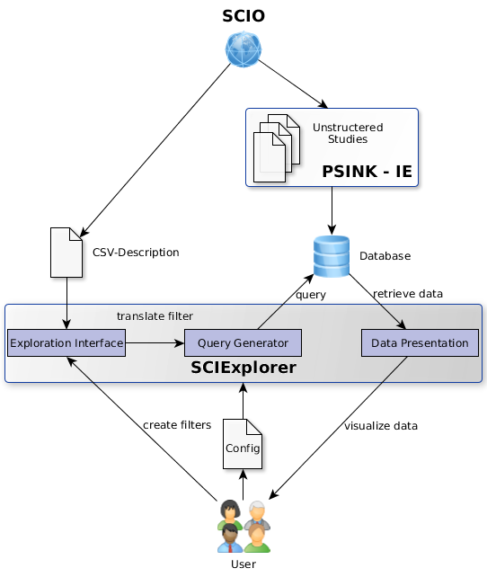
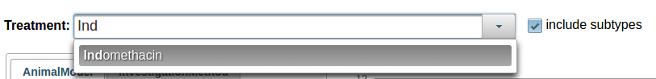
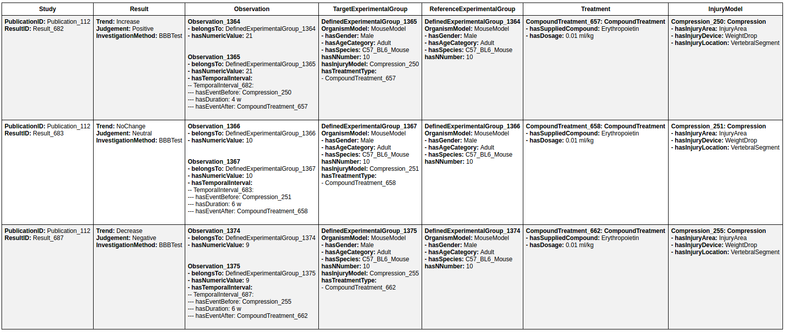

We present SCIExplorer
1
, an interactive web application for browsing research data represented in RDF format. Offering an intuitive exploration of the data in a visual interface based on the data-describing ontology, SCIExplorer is designed to overcome the potentially high entrance barriers faced by human domain experts interested in investigating research results at a glance without the need to formulate complex queries. In contrast, SCIExplorer provides filter-driven dynamic generation of SPARQL queries without the need to specify them manually. We demonstrate that the tool can be effectively used to answer relevant competency questions in the domain of spinal cord injury, thus providing intuitive access to the results of preclinical studies which are represented in RDF. In particular, SCIExplorer offers drill-downs to individual preclinical results in order to visualize their core parameters at an interpretable level of abstraction that is guided by an underlying domain ontology.
Introduction
The amount of openly available research data in machine-readable formats such as RDF is constantly growing, due to the rise of open research portals, on the one hand, and successively more powerful natural language processing tools offering the capability of transforming unstructured data into structured form, on the other. Being tailored to automated processing by machines and services, these data sources are often hard to access by human researchers, as research data in various domains are inherently highly complex, and the data representation formalisms impose high barriers to human domain experts regarding their ability to interact with the data source. Against this background, the need for low-level, intuitive access to research data in RDF or derived formalisms becomes more important than ever. Current approaches towards browsing linked data such as LODmilla
[4]
, Yuzu
[1]
, Disco
[3]
or Tabulator
[2]
closely follow the RDF data model. In case of complex knowledge structures as they are ubiquitous in research data, this may result in obfuscation due to a multitude of triples which need to be browsed.
In this work, we present SCIExplorer, an interactive web application for investigating the results of preclinical studies in the spinal cord injury (SCI) domain that are represented in RDF. Offering an intuitive exploration of the data in a visual interface based on the data-describing ontology, SCIExplorer is designed to overcome the aforementioned problems, thus enabling domain experts without profound technical knowledge to formulate complex queries that are meaningful from a research perspective. In particular, the tool provides filter-driven dynamic generation of SPARQL queries without the need to specify them manually, and offers drill-downs to individual preclinical results in order to visualize their results and core parameters at a glance. We demonstrate that SCIExplorer can be effectively used to answer relevant domain-specific competency questions provided by experts.
Background: Automatically Populating a Spinal Cord Injury Knowledge Base from Preclinical Studies
Our motivation to develop an exploration tool for efficiently browsing RDF research data arose in the context of the PSINK project
2
, that aims at ontology-based information extraction from large amounts of preclinical studies in the SCI domain. The main project goal is to create the first comprehensive SCI knowledge base in order to foster translation from preclinicial research into therapeutic concepts that are likely to be effective in human patients. The resulting knowledge structures, i.e., the results of preclinical studies, are represented in an RDF database that can be queried via SPARQL. Both the information extraction process and the data representation scheme underlying the SCIExplorer are guided by the Spinal Cord Injury Ontology (SCIO) that is specifically developed in this project
[5]
. Currently, SCIO contains over 500 entities and relations describing a preclinical study in a very fine-grained and well-structured way.
SCIExplorer
This tool was developed to explore the complex structures of preclinical studies that follow the conceptualization provided by the Spinal Cord Injury Ontology. The interface is generated semi-automatically given the specifications of an ontology and a configuration file. The latter is used to enable different views to the data, thus focusing on different aspects of SCIO.
Technical Details.
SCIExplorer is a stand-alone framework written in Java, HTML and PHP.
3
It is accessible though common web-browsers. The graphical interfaces relies on the JavaEE standard JavaServer Faces – Framework (JSF) that is based on Servlets and JavaServer Pages (JSP). The content management is realized with PrimeFaces.
System Architecture.
Figure 1
shows the overall system architecture. This work focuses on the SCIExplorer (grey box) that is divided into three main parts:

Figure 1.
System Architecture
The
Exploration Interface
serves as an entry point. It is aligned to the ontology and modified by a configuration file that specifies different views to the data. The data exploration is driven by various filter strategies that are automatically extracted from the ontology.
The
Query Generator
automatically transforms set filters (based on concepts and properties provided by SCIO) into SPARQL statements.
The extracted data is prepared and visualized in the
Data Presentation
module. The configuration file specifies the parts of the data that should be viewed.
In the following, all parts are described in more detail.
Exploration Interface
A major motivation of researchers working in the SCI domain is on gaining a deeper, comparative understanding of therapeutic approaches that have been investigated in previous preclinical studies and the core parameters involved in their successful or ineffective application. Our exploration interface adapts to this focus by offering the choice of a treatment (optionally including subtypes) as an entry point via an interactive search field (cf.
Figure 2
).

Figure 2.
Entry point of the system. A treatment can be selected from an interactive search field.
Figure 3.
Different filter.
A drop-down menu provides a list of common treatments that are covered by the ontology, e.g., pharmaceutical compounds, hypothermic treatments, or rehabilitative trainings. Based on the selected treatment, further filters can be applied subsequently.
Main aspects of a preclinical SCI study as covered by SCIExplorer are
Treatment
,
AnimalModel
,
InjuryType
and
InvestigationMethod
.
Possible filters are automatically extracted from the ontology and grouped by their ontological role (i.e., subtype relations, object-type properties and data-type properties). Addressing these roles, we differentiate between two types of filters (cf.
Figure 3
):
Boolean Filter.
Users can set constraints by specifying a rdf:type constraints to make sure that only results for a certain type are retrieved (e.g.
RatModel
or
Male
).
RegEx Filter.
For data-type properties, users can set constrains by limiting the values of the object position to a certain range.
All properties, sub-properties and sub-class relations are flattened under each main aspect in order to reduce the complexity of the data. We argue that the exact hierarchical structure below these main aspects can be discarded without losing any important information.
Filter-driven Dynamic Generation of SPARQL Queries
The dynamic generation of SPARQL queries takes all previously set filters into account and translates them into a set of SPARQL statements. Each filter that was set by the user in the GUI is translated into a basic graph pattern (BGP) in the SPARQL query. BGPs can be typing statements using
rdf:type
or triples involving an object property or data-type property. For instance, the filter specifying that the user is interested in trials in rats (cf.
Figure 3
) imposes an
rdf:type
constraint on the possible subtypes of the
AnimalModel
class in SCIO, which would be translated as follows:
?OrganismModel rdfs:type scio:RatModel.
Listing 1.
Translation of type constraint into query statement
Analogously, SPARQL statements capturing filters over object properties (e.g.,
scio:hasGender
) are translated as follows:
?OrganismModel scio:hasGender scio:Male.
Listing 2.
Translation of object-type property constraint into query statement
An example of a filter involving a data-type property is the specification of an interval of animals’ weights, which is translated into SPARQL using a
FILTER
statement:
Listing 3.
Translation of data-type property constraint into query statement
In order to generate a complete SPARQL query, statements on classes with a common parent (e.g.,
RatModel
and
MouseModel
with parent
Animal
Model
) are disjunctively combined using the
UNION
keyword. All other statements are combined into a conjunction.
Data Presentation
Retrieved results are presented in bar diagrams (one per main aspect) capturing the success rate of the respective treatments, divided into positive, negative, and neutral outcome. By default, the four main aspects and all properties of the selected treatment are shown in one dashboard. An example of a bar diagram displaying the observed outcomes of a particular treatment for different dosages is shown in
Figure 4
.
Figure 4.
Bar diagram for different dosages
If all desired filters are set, the user can switch to a drill-down view in which the retrieved results are arranged in a table (each column representing a main aspect of a study, each row representing a result). In the interest of presenting an entire study at a glance, aspect-related columns are grouped together.
Figure 6
shows an example drill-down.
Use Cases in the Spinal Cord Injury Domain
Common requirements proposed by researchers in the SCI domain involve
answering competency questions
aiming at comparative views of individual studies with a focus on certain key parameters, or
treatment analytics
at different levels of depth and granularity (e.g., detecting clusters of equivalent treatment concepts, predicting their prospective success in different model organisms, among others). Definitive answers to such information needs may require statistical analyses and meta studies. Yet, SCIExplorer in its current state is already capable of delivering valuable information regarding comparative views on treatments or the generation of new hypotheses or explanations about the observed (in-)efficacy of therapeutic concepts.
Figure 5.
Exemplary dashboard for answering competency questions
Consider the following competency question:
In which lesion models being tested in male rats or mice have no negative effects of erythropoietin been observed so far?
Answering this question requires the specification of three filters (
MouseModel
,
RatModel
,
Male
). As a result, the answer can be inferred from investigating the
InjuryType
pane on the dashboard (cf.
Figure 5
): The current data pool contains two different injury models treated with erythropoietin, viz., compressions and contusions. So far, negative outcomes have only been reported for compressions.
Additionally, inspection of the
Dosage
pane shows that the negative result is tied to a particular dosage of 0.01 ml/kg of erythropoietin; however, the same dosage has also led to positive and neutral outcomes. In order to explore this finding in more detail, a drill-down can be generated by adding an additional constraint for the specific dosage. The resulting table, presenting all individual results from the RDF data pool which satisfy the current set of ontological constraints at a glance, is displayed in
Figure 6
.
As can be seen from the table, the difference in outcomes (positive vs. negative/neutral) is due to different time points of the measurement of the observation (four weeks vs. six weeks after treatment). Apparently, all other parameters being equal, erythropoietin in mice tends to induce early effects towards functional recovery after compression which are not sustainable over time, though.

Figure 6.
Comparative drill-down to study results based on previously specified constraints
Discussion
We have presented SCIExplorer as a tool that enables visual analytics over research data represented in RDF, based on an intuitive access layer that is guided by an underlying domain ontology. With a focus on the spinal cord injury domain, we have demonstrated that SCIExplorer is capable to highlight meaningful and interpretable information for domain experts, without the need for specifying complex queries in a formal language such as SPARQL. SCIExplorer is automatically derived from a data-describing ontology, assuming a particular view on the underlying RDF data pool. We envisage two main directions for further development of SCIExplorer: first, adapting the tool to different research domains; second, increasing the degrees of freedom in the exploration process (e.g., by providing alternative entry points), while keeping the complexity faced by the user at a tractable level.
Acknowledgements
This work has been funded by the Federal Ministry of Education and Research (BMBF, Germany) in the PSINK projects (031L0028A & 031L0028B).
References
John P. McCrae (2016): Yuzu. Publishing Any Data as Linked Data, in: Proceedings of ISWC Posters and Demo Track.
András Micsik, Sándor Turbucz, Attila Györök (2016): LODmilla: A Linked Data Browser for All, in: Proceedings of SEMANTICS Posters and Demo Track.
http://ceur-ws.org/Vol-1224/paper8.pdf
Nicole Brazda, Veronica Estrada, Tarek Kirchhoffer, Hendrik ter Horst, Matthias Hartung, Cord Wiljes, Roman Klinger, Philipp Cimiano, Hans Werner Müller (2016): SCIO. The Spinal Cord Injury Ontology, a Prerequisite for Automated Data Extraction from Publications on Research in Spinal Cord Injury, in: Proceedings of the 18th Spinal Research Network Meeting.